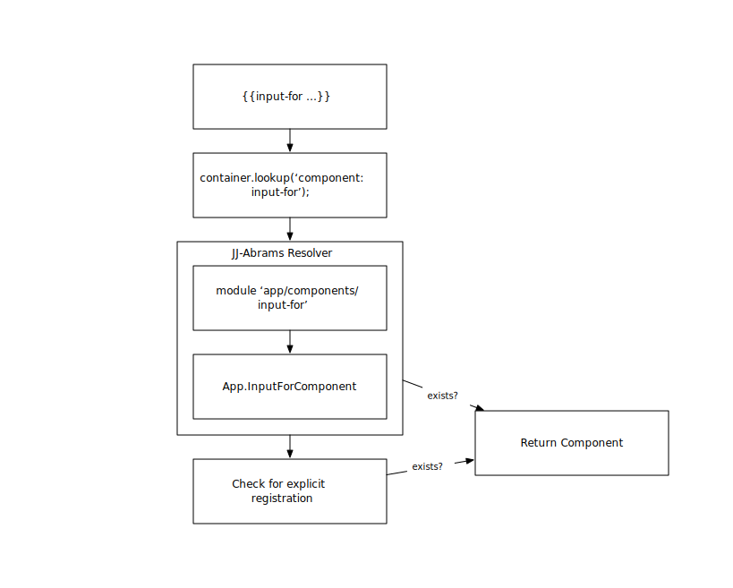

We will encourage you to develop the three great virtues of a programmer: laziness, impatience, and hubris.
Larry Wall, creator of Perl
<3 Libraries
Libraries enable laziness.
Existing Ember.js Libraries
Not Good Enough
- Unconventional
- Antiquated
- Not enough
- No one's fault
Example: Components
Prime candidates for libraries.
Librarification
How do you give components to other people?
The Container
- Dependency injection
- Layer of indirection (IoC)
Ember App Kit

Overriding
Container resolution allows for easy customization.
Aside: Technique used by Ember-Data and EPF:
App.PostSerializer = DS.RESTSerializer.extend({});
DRY Things Up
Use a helper instead of component.
Think Outside the Box
Get crazy, use a custom type.
Summary
- Use the container
- Rely on initializers
- Use custom types (sparingly)
- Assume no prototype extensions
- Libraries need more first-class support
Anti-patterns
- Views instead of components
- Not using the container
- Globals
The (Hopefully Not-Distant) Future
- Custom Namespaces
- ES6 Modules Everywhere